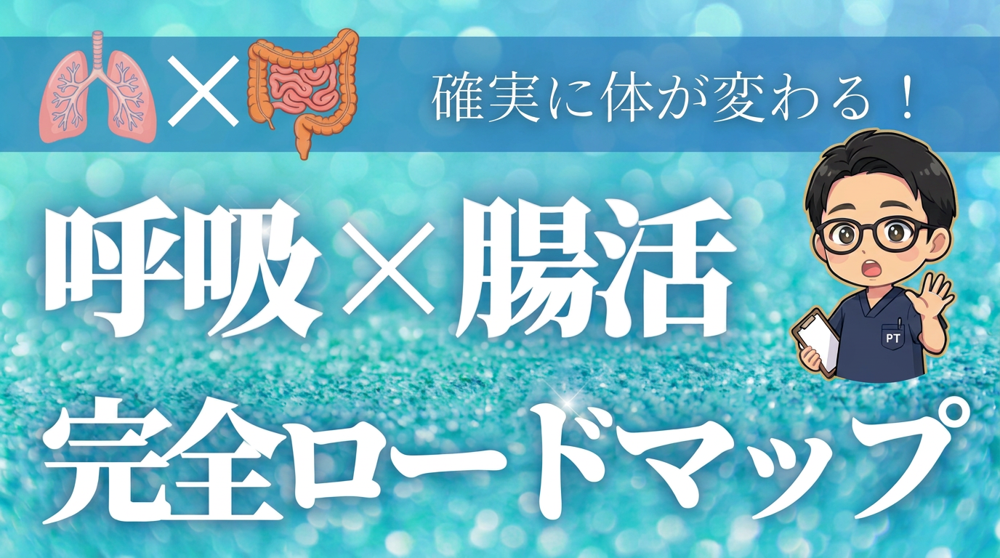
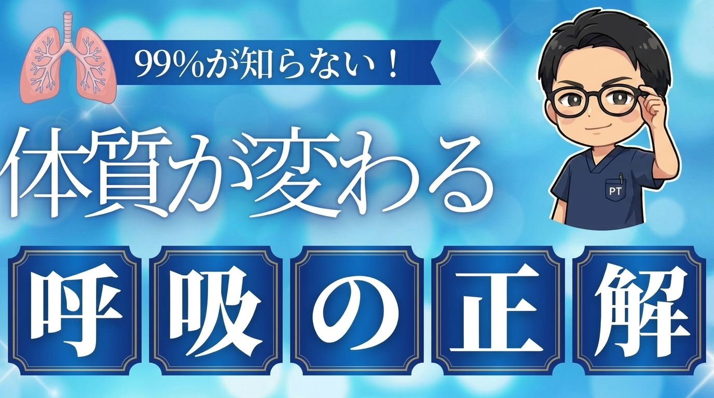
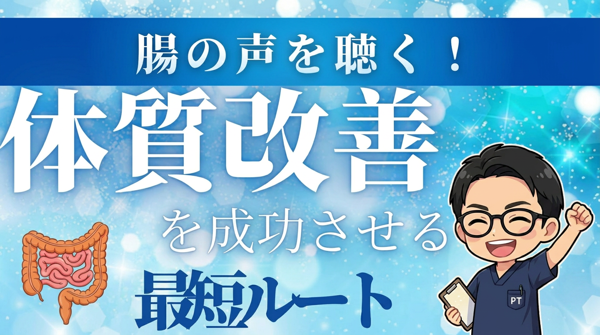
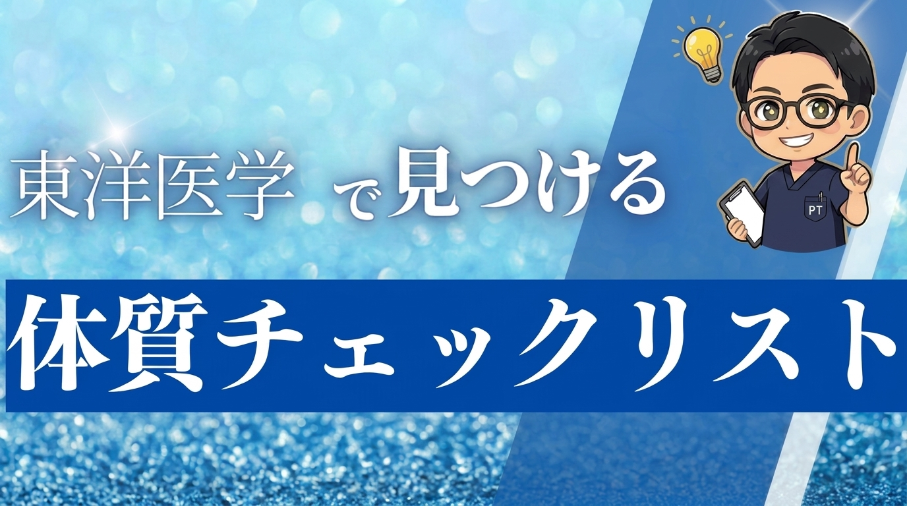
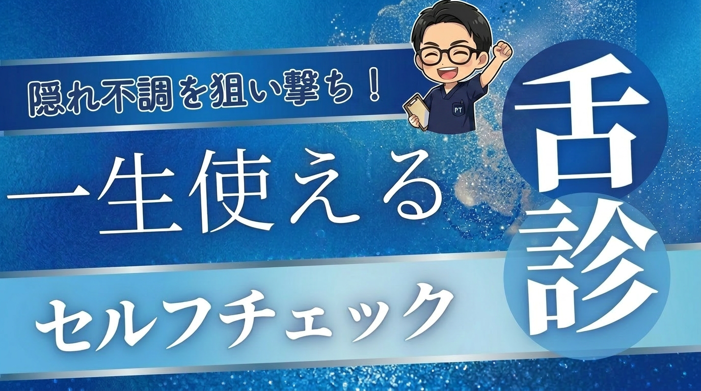
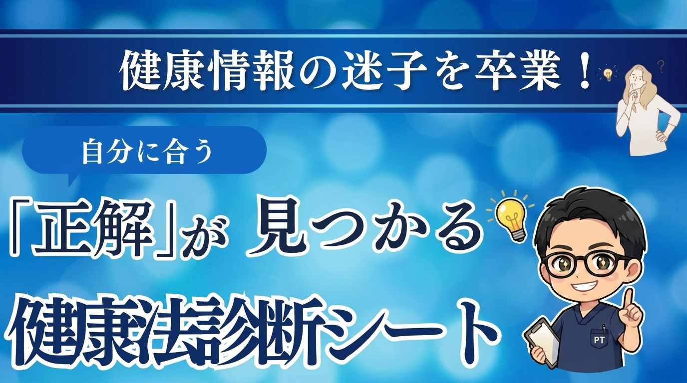

このプレミアム動画特典をご覧いただく前に…
このページは3日後に削除します。
削除後は特別なご案内も受付終了となりますので、注意深く文章と動画の
内容をご覧ください。
非常に重要な内容となっております。
※時間経過後はリンクへのアクセスが一切できなくなります。
＼現役理学療法士が提案／
へご招待します
長年抱え続けてきた慢性的な不調を改善する
「呼吸×腸活」の極秘メソッドを大公開！
その人の体質に合った完全オーダーメイド型プレミアム個別相談会
「もっと具体的な健康法を知りたい」「自分の体質に合った最短ルートを知りたい」
という方へ。
あなたの現状をヒアリングし、あなた専用のオリジナル体質改善ロードマップを作成する
一対一の相談会です。
さらに個別相談会の参加者限定特典として
あなたの体質改善を強力にサポートするオリジナルツールを無料でご提供します。

体質改善のステップを網羅した全体マニュアル
忙しい人でも今日からすぐに始められる
最もシンプルな実践スタートガイド

自律神経を整え疲労をその場でリセットする
正しい呼吸法の実践解説書

腸活の基本を押さえたもっとも簡単な実践マニュアル

東洋医学のタイプから現在の体質と不調の原因を特定するチェック表

毎朝鏡で舌を見るだけで、その日の健康状態とエラーがひと目でわかる図解シート

体質を入力するだけで、おすすめの食事や生活習慣を自動で割り出すセルフ診断ツール
現在の生活習慣や体調のエラー、お悩みを丁寧にお聞きします。
あなたの体質に合わせた、最も効果的で具体的な改善アプローチをご案内します。
一対一の相談会が終了した段階で、超豪華7大特典をすべてお渡しします。
さらに深く学びたい方に向けて、体質改善プレミアム講座（モニター生）のご案内をいたします。
※講座（モニター生）のご案内は希望者のみになります。
参加者限定の7大特典目的でのご参加でも全く問題ありません。ぜひお気軽にご参加ください。
ぜひお気軽にご参加ください。
これらに当てはまる方は相談会への申し込みはご遠慮ください。
これらに当てはまる方にはオススメとなります。
これらの豪華特典は、以下のボタンから無料で受け取ることができます。
※予告なく配布を終了する場合がありますのでお早めにお受け取りください。
僕自身、20代後半から常に体が重だるく、慢性的な不調に悩まされ続けていました。30代に入るとさらに悪化し、寝ても疲れが取れず、毎日「しんどい…」と感じてばかりのボロボロな状態でした。
「このまま一生、不調と付き合っていくしかないのか」と絶望する中、リハビリのプロとしての知識に加えて、東洋医学の勉強と呼吸生理学の知識を融合させ、自らの体質改善に本気でチャレンジしました。
そこで気づいたのは、体質改善には何よりもまず「呼吸」によって身体の自律神経の土台を作ることが不可欠であるということ。そして、その土台が整った後に「簡単な腸活」を組み合わせることで、初めて体が劇的に変わるという真実でした。
実際にこのメソッドを実践した結果、長年の慢性的な疲労感が消え去っただけでなく、長年悩んでいた花粉症、胃腸の弱さ、風邪をひきやすい体質を克服。さらに、理学療法士でありながら慢性化していた肩こりや腰痛までもが綺麗に改善したのです。
不明な点や聞いておきたいことがあれば、公式LINEからいつでもご連絡ください。